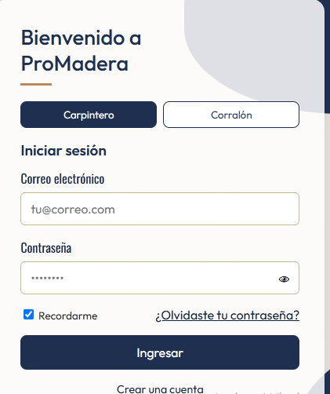
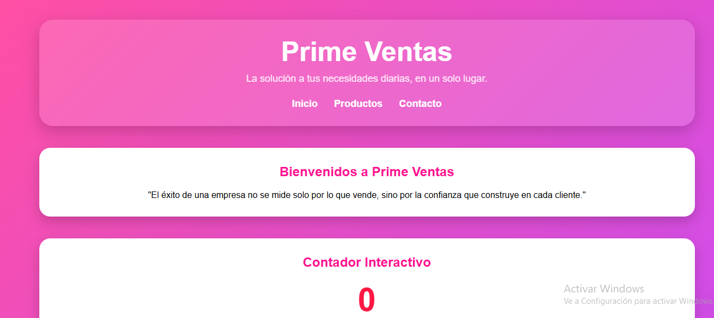
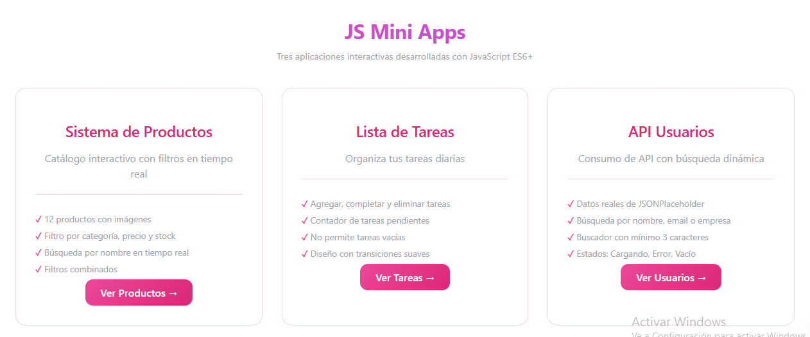

Proyectos

MaderaPro (Proyecto Promadera)
Plataforma web para el rubro de la carpintería, pensada para que carpinteros y corralones trabajen en un mismo lugar. Al ingresar se elige el perfil, Carpintero o Corralón, y cada uno ve su propia versión de la app. El carpintero arma su carrito, hace sus pedidos, los paga con Mercado Pago y descarga el comprobante desde "Mis Pedidos". El corralón tiene una pantalla de inicio con un resumen de su actividad.
Mi rol: empecé desarrollando el backend, después pasé al frontend y, al terminar la app, me encargué de probarla de punta a punta para asegurar que todo funcionara correctamente (QA).
Tecnologías: Python, API, base de datos, Git y GitHub.
Repositorio
Demo

MedSalud
Sitio de información médica para que cualquier persona entienda su cuerpo y cuide su salud. Está organizado en 12 secciones, como Enfermedades, Síntomas, Prevención, Salud mental, Primeros auxilios y Medicamentos. Tiene un buscador que filtra los resultados mientras se escribe. Los usuarios se registran e inician sesión, y según su rol (usuario o administrador) ven distintas opciones. El administrador crea, edita y elimina los artículos desde un panel propio.
Mi rol: desarrollo completo (frontend, backend y base de datos).
Tecnologías: PHP, MySQL, PostgreSQL, JavaScript, MVC, Laravel y Docker.
Repositorio
Demo

Prime Ventas
Tienda tecnológica de una sola página, con navegación entre Inicio, Productos y Contacto. Los productos se pueden filtrar por categoría y por stock, y el formulario de contacto muestra una vista previa en vivo de lo que se está escribiendo. Está armada con 7 componentes de React reutilizables, y la portada incluye un contador interactivo.
Mi rol: desarrollo completo del frontend.
Tecnologías: React 19, Vite y CSS responsive.
Repositorio
Demo

JS Mini Apps
Tres aplicaciones pequeñas hechas con JavaScript puro para practicar. Un catálogo de 12 productos que se filtra combinando categoría, precio y stock. Una lista de tareas para agregar y gestionar pendientes. Un buscador de usuarios que pide los datos a una API pública y los muestra en pantalla.
Mi rol: desarrollo completo.
Tecnologías: HTML5, CSS3, JavaScript ES6+ y Fetch API.
Repositorio
Demo

Sitio web personal
Mi primer sitio, donde practiqué la estructura de una página con HTML semántico y la distribución del contenido con Flexbox y Grid. Incluye un formulario de contacto y lo probé en tres tamaños de pantalla (computadora, tablet y celular) para que se vea bien en todos.
Mi rol: diseño y desarrollo completo.
Tecnologías: HTML5, CSS3 y diseño responsive.
Repositorio
Demo